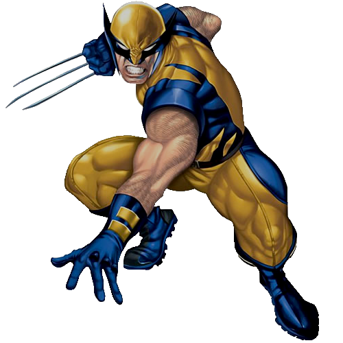
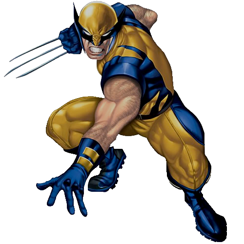
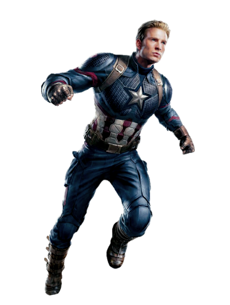

There are more than 7000 characters in the Marvel Universe. As you would already know, many of the major heroes are depicted in today's movies.
Captain America is the star-spangled super hero that fights for what he believes is true. This character was first created in 1941 by Joe Simmons, Jack Kirby, Stan Lee. His first appearanace was in March of 1941 from Timely Comics. As you can tell from the date, this was during World War 2. The creators of Captain also wanted a patriotic hero that would the defy Nazi regime while upholding American beliefs and values. Consequently, in the Captain America #1, we see the creators making a bold statement by having Captian go against Adolf Hitler and winning.

Black Panther first apeared in Marvel Comics in July 1966 thank Stan Lee and artist Jack Kirby. Even though Black Panther is a stand-alone character, he was first depicted in Fantastic Four no. 52 as person with enahanced abilites, rigourious hand-to-hand trainig, and vast knowledge on various subjects.
Iron Man's alter ego is Tony Stark, who is a wealthy inventor and owner of Stark Industries. This character first debuted in Tales of Suspense no. 39 in March 1963. During this time, America was undergoing the Cold War. As result, Lee decided to target younger readers by forcing them to like a hero who is an industrialist that sells weopons to the Army. Eventually this grew on many people as we can see today.
Doctor Strange made his first appearance in Strange Tales no. 110 in July 1963. As stated in the name, this character has many odd powers such as Divince Conduit, enter into different dimensions, and universal awareness. Fun fact about Doctor Strange is that his body older than the earth itself. Hoever, this does not mean that he himself is a billion years old.